CODING AGENTS AS PIXEL WORLD MODELS
traex/GPT-6.1-Sol · phygen_042
点击播放 · 原生 RGB 像素
逐轮保存的候选
回放视频、检查图与代码变化。
每份候选均可单独播放。实际图片检查记录在下方工具轨迹中。
候选 01播放与检查图
点击播放 · 原生 RGB 像素
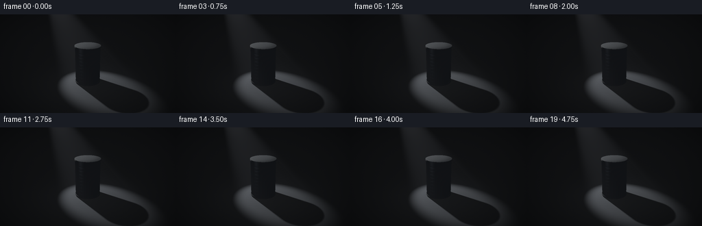
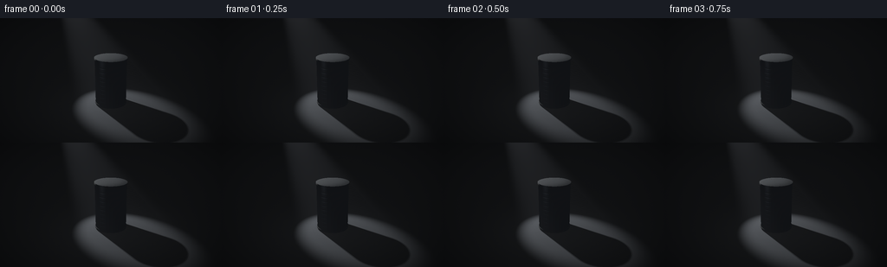
展开代码变化
--- 上一保存版本
+++ 本次保存版本
@@ -0,0 +1,189 @@
+"""Procedural cinematic rendering of a tin can under a diagonal spotlight.
+All geometry, illumination, haze and motion are computed locally with numpy.
+"""
+from pathlib import Path
+import json
+import numpy as np
+from PIL import Image
+from artifact_io import save
+
+ROOT = Path(__file__).resolve().parent
+SPEC = json.loads((ROOT/'task_spec.json').read_text())
+SS=3
+W,H=SPEC['width']*SS,SPEC['height']*SS
+DT=np.float32
+
+def norm(x):
+ return x / np.maximum(np.linalg.norm(x,axis=-1,keepdims=True),1e-8)
+def dot(a,b): return np.sum(a*b,axis=-1)
+def smooth(a,b,x):
+ q=np.clip((x-a)/(b-a),0,1)
+ return q*q*(3-2*q)
+
+CAM=np.array([4.,-8.,4.5],dtype=DT)
+TARGET=np.array([0.,0.,1.05],dtype=DT)
+F=norm(TARGET-CAM)
+R=norm(np.cross(F,np.array([0.,0.,1.],dtype=DT)))
+U=np.cross(R,F)
+y,x=np.mgrid[0:H,0:W].astype(DT)
+viewx=(x+.5-W/2)/W*2
+viewy=(H/2-y-.5)/W*2
+D=norm(F+viewx[...,None]*.49*R+viewy[...,None]*.49*U)
+O=np.broadcast_to(CAM,D.shape)
+
+# Closed, rolled-rim tin cylinder. Ring primitives provide real silhouettes.
+parts=[(.66,.075,2.02,'body'),(.686,.062,.12,'rim'),(.686,2.005,2.058,'rim'),(.666,1.991,2.018,'rim')]
+def cylinder_t(o,d,r,z0,z1):
+ a=d[...,0]**2+d[...,1]**2
+ b=o[...,0]*d[...,0]+o[...,1]*d[...,1]
+ c=o[...,0]**2+o[...,1]**2-r*r
+ disc=b*b-a*c
+ root=np.sqrt(np.maximum(disc,0))
+ t0=(-b-root)/np.maximum(a,1e-10)
+ t1=(-b+root)/np.maximum(a,1e-10)
+ valid0=(disc>=0)&(t0>1e-4)&(o[...,2]+d[...,2]*t0>=z0)&(o[...,2]+d[...,2]*t0<=z1)
+ valid1=(disc>=0)&(t1>1e-4)&(o[...,2]+d[...,2]*t1>=z0)&(o[...,2]+d[...,2]*t1<=z1)
+ ts=np.minimum(np.where(valid0,t0,1e6),np.where(valid1,t1,1e6))
+ face=np.zeros(ts.shape,dtype=np.int8)
+ for height,flag in ((z0,-1),(z1,1)):
+ tc=(height-o[...,2])/np.where(abs(d[...,2])>1e-9,d[...,2],1e-9)
+ p=o+d*tc[...,None]
+ ok=(tc>1e-4)&(p[...,0]**2+p[...,1]**2<=r*r)&(tc<ts)
+ ts=np.where(ok,tc,ts)
+ face=np.where(ok,flag,face)
+ return ts,face
+
+Tfloor=-CAM[2]/D[...,2]
+Tfloor=np.where((Tfloor>0)&(D[...,2]<0),Tfloor,1e6)
+T=Tfloor.copy()
+kind=np.zeros((H,W),np.int8)
+face=np.zeros((H,W),np.int8)
+for i,(radius,z0,z1,name) in enumerate(parts):
+ tt,ff=cylinder_t(O,D,radius,z0,z1)
+ ok=tt<T
+ T=np.where(ok,tt,T);kind=np.where(ok,i+1,kind);face=np.where(ok,ff,face)
+P=O+D*T[...,None]
+can=kind>0
+N=np.zeros_like(P);N[...,2]=1
+side=can&(face==0)
+rad=norm(np.stack([P[...,0],P[...,1],np.zeros_like(T)],axis=-1))
+N=np.where(side[...,None],rad,N)
+N=np.where((can&(face==-1))[...,None],np.array([0,0,-1],DT),N)
+# Subtle pressed horizontal rings and extremely fine brushed texture.
+z=P[...,2]
+bands=np.zeros_like(z)
+for zz in (.31,.49,.67,.85,1.03,1.21,1.39,1.57,1.75):
+ bands += -.16*(z-zz)/.020*np.exp(-((z-zz)/.020)**2)
+brush=.017*np.sin(z*1040)+.009*np.sin(z*1743+.2)
+bump=np.zeros_like(N);bump[...,2]=bands+brush
+N=np.where((side&(kind==1))[...,None],norm(N+bump),N)
+rho=np.sqrt(P[...,0]**2+P[...,1]**2)
+top=can&(face==1)
+topgroove=(.07*np.sin(rho*150)*np.exp(-((rho-.52)/.09)**4)+.015*np.sin(rho*620))
+N=np.where(top[...,None],norm(N+rad*topgroove[...,None]),N)
+V=-D
+
+rng=np.random.default_rng(19)
+# Repeatable physical surface grain, never temporal video noise.
+gr=rng.normal(0,1,(H,W)).astype(DT)
+floorgrain=(.015*np.sin(P[...,0]*121+np.sin(P[...,1]*81))+.01*np.sin(P[...,1]*272+P[...,0]*93)+.016*gr)
+basefloor=np.array([.125,.135,.15],DT)*(1+floorgrain[...,None])
+# Floor has no horizon line; distant surfaces disappear into the unlit room.
+
+
+def occlusion(p,ld,limit):
+ tt,_=cylinder_t(p+ld*.004,ld,.668,.05,2.058)
+ return tt<limit
+
+def spot(p,lp,axis):
+ rel=p-lp
+ dist=np.linalg.norm(rel,axis=-1)
+ cc=dot(rel/np.maximum(dist[...,None],1e-5),axis)
+ return smooth(np.cos(.295),np.cos(.17),cc),dist
+
+# Static atmosphere integration positions; shadow tests create a natural occluded beam.
+STEPS=46
+svals=(np.arange(STEPS,dtype=DT)+.5)/STEPS
+# very distant rays need not march farther than the visible room
+marchlen=np.minimum(T,17)
+
+
+def render(frame):
+ time=frame/SPEC['fps']
+ lp=np.array([-3.8+.035*np.sin(time*.7),1.4+.025*np.cos(time*.55),5.4],DT)
+ aim=np.array([0.,0.,.72],DT)
+ axis=norm(aim-lp)
+ spotmask,dist=spot(P,lp,axis)
+ L=norm(lp-P)
+ NL=np.maximum(dot(N,L),0)
+ # Small emitter: soft penumbra, yet a readable projected can shadow.
+ shadow=np.zeros_like(T)
+ for offset in ((0,0,0),(.07,0,0),(-.07,0,0),(0,.07,0),(0,-.07,0)):
+ light=lp+np.array(offset,DT)
+ ld=norm(light-P)
+ shadow+=occlusion(P,ld,np.linalg.norm(light-P,axis=-1)).astype(DT)/5
+ power=22*(1+.018*np.sin(time*1.3))
+ irradiance=power/(dist*dist)*spotmask*(1-shadow)
+ # Matte dark slate floor.
+ rgb=basefloor*(.029+irradiance[...,None]*NL[...,None])
+ # Modest bounced light under the beam keeps the shadow distinct without crushing it.
+ poolbounce=np.exp(-((P[...,0]-.4)**2+(P[...,1]+.3)**2)/7)*.015
+ rgb+=basefloor*poolbounce[...,None]
+ # Realistic conductor, anisotropic brushed tin.
+ NV=np.maximum(dot(N,V),.02)
+ half=norm(L+V)
+ NH=np.maximum(dot(N,half),0)
+ VH=np.maximum(dot(V,half),0)
+ rough=np.where(kind==1,.26,.20)
+ rough=np.where(top,.30,rough)
+ alpha=rough*rough
+ denom=NH*NH*(alpha*alpha-1)+1
+ distribution=alpha*alpha/(np.pi*denom*denom+1e-6)
+ k=(rough+1)**2/8
+ geometry=(NV/(NV*(1-k)+k))*(NL/(NL*(1-k)+k+1e-6))
+ fresnel=np.array([.66,.69,.71],DT)+(1-np.array([.66,.69,.71],DT))*(1-VH[...,None])**5
+ spec=distribution[...,None]*geometry[...,None]*fresnel/(4*NV[...,None]*np.maximum(NL[...,None],.015))
+ metal=irradiance[...,None]*NL[...,None]*(spec+.095*np.array([.63,.68,.73],DT))
+ # Reflections of dim room panels, angular and restrained on the unlit side.
+ refl=2*dot(N,V)[...,None]*N-V
+ panel1=np.exp(-((dot(refl,norm(np.array([-4.,-5.,3.],DT)))-1)/.16)**2)
+ panel2=np.exp(-((dot(refl,norm(np.array([2.,3.,4.],DT)))-1)/.18)**2)
+ ambient=.005+.045*panel1+.018*panel2
+ metal+=ambient[...,None]*np.array([.72,.82,1.],DT)
+ # Bright but narrow machined bands, made from reflected illumination.
+ rolled=(kind>1)&side
+ metal+=rolled[...,None]*(irradiance*NL*.12)[...,None]
+ # The lid bears concentric pressed circles, not lettering.
+ pressed=1-.15*np.exp(-((rho-.54)/.008)**2)-.11*np.exp(-((rho-.48)/.006)**2)
+ metal=np.where(top[...,None],metal*pressed[...,None],metal)
+ metal*=np.clip(1+.012*gr[...,None]+.012*np.sin(z[...,None]*1580),.94,1.06)
+ rgb=np.where(can[...,None],metal,rgb)
+ # Light is made visible by faint airborne dust; the can also occludes the shaft.
+ haze=np.zeros_like(T)
+ for s in svals:
+ tt=marchlen*s
+ pp=CAM+D*tt[...,None]
+ cone,dd=spot(pp,lp,axis)
+ ld=norm(lp-pp)
+ blocked=occlusion(pp,ld,dd)
+ cosang=dot(-ld,-D)
+ phase=.5+.55*np.maximum(cosang,0)**3
+ density=.0055*(1+.12*np.sin(pp[...,0]*2+pp[...,2]*3))
+ scatter=cone*power/(dd*dd+.4)*density*phase*(1-blocked)
+ haze+=scatter*marchlen/STEPS
+ rgb+=haze[...,None]*np.array([.83,.88,1.],DT)
+ # Gentle edge falloff and photographic exposure/response.
+ vignette=1-.23*((viewx/.95)**2+(viewy/.60)**2)
+ rgb*=np.clip(vignette,.53,1)[...,None]
+ rgb=1-np.exp(-rgb*1.5)
+ rgb=np.where(rgb<.0031308,12.92*rgb,1.055*np.maximum(rgb,0)**(1/2.4)-.055)
+ out=np.uint8(np.clip(rgb*255,0,255))
+ image=Image.fromarray(out).resize((SPEC['width'],SPEC['height']),Image.Resampling.LANCZOS)
+ return np.asarray(image)
+
+if __name__=='__main__':
+ frames=[]
+ for i in range(SPEC['frames']):
+ frames.append(render(i))
+ print(f'rendered {i+1}/{SPEC["frames"]}',flush=True)
+ save(np.stack(frames),ROOT)
候选 02播放与检查图
点击播放 · 原生 RGB 像素
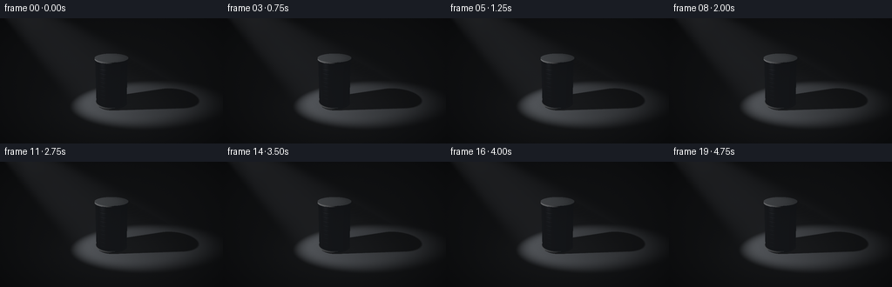
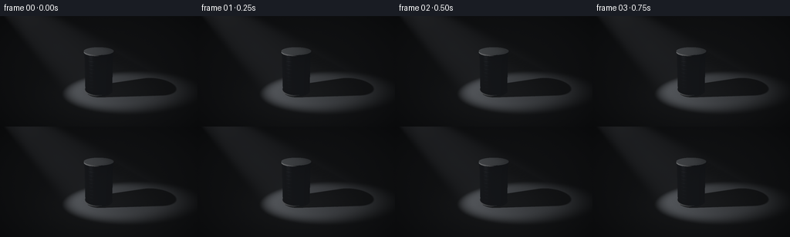
展开代码变化
--- 上一保存版本
+++ 本次保存版本
@@ -110,7 +110,7 @@
def render(frame):
time=frame/SPEC['fps']
- lp=np.array([-3.8+.035*np.sin(time*.7),1.4+.025*np.cos(time*.55),5.4],DT)
+ lp=np.array([-3.8+.035*np.sin(time*.7),-3.0+.025*np.cos(time*.55),5.4],DT)
aim=np.array([0.,0.,.72],DT)
axis=norm(aim-lp)
spotmask,dist=spot(P,lp,axis)
候选 03播放与检查图
点击播放 · 原生 RGB 像素
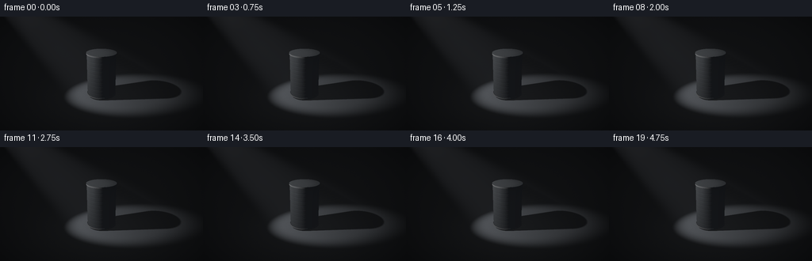
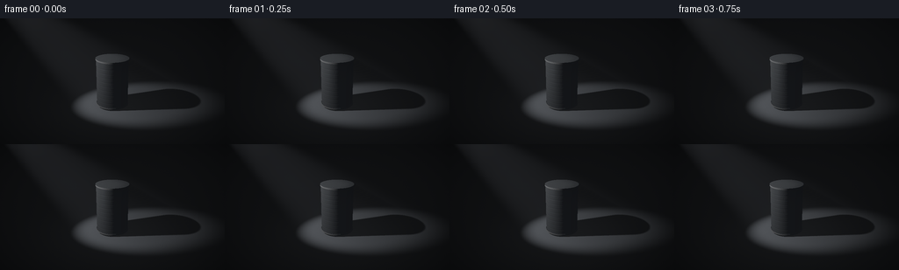
展开代码变化
--- 上一保存版本
+++ 本次保存版本
@@ -121,7 +121,7 @@
for offset in ((0,0,0),(.07,0,0),(-.07,0,0),(0,.07,0),(0,-.07,0)):
light=lp+np.array(offset,DT)
ld=norm(light-P)
- shadow+=occlusion(P,ld,np.linalg.norm(light-P,axis=-1)).astype(DT)/5
+ shadow+=occlusion(P+N*np.where(can,.03,.001)[...,None],ld,np.linalg.norm(light-P,axis=-1)).astype(DT)/5
power=22*(1+.018*np.sin(time*1.3))
irradiance=power/(dist*dist)*spotmask*(1-shadow)
# Matte dark slate floor.
候选 04播放与检查图
点击播放 · 原生 RGB 像素
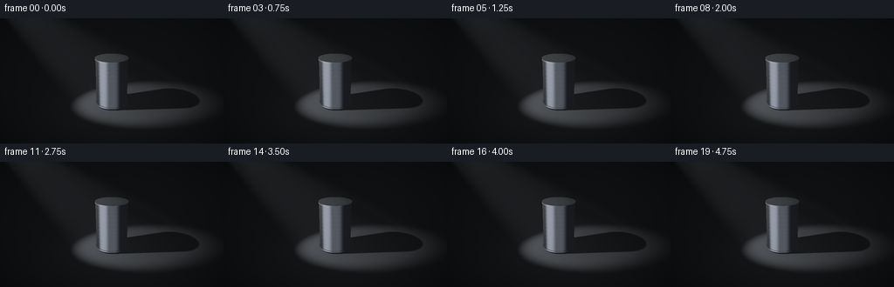
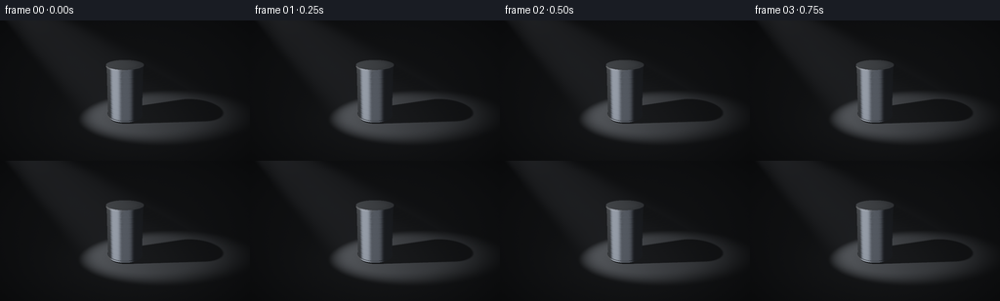
展开代码变化
--- 上一保存版本
+++ 本次保存版本
@@ -146,9 +146,9 @@
metal=irradiance[...,None]*NL[...,None]*(spec+.095*np.array([.63,.68,.73],DT))
# Reflections of dim room panels, angular and restrained on the unlit side.
refl=2*dot(N,V)[...,None]*N-V
- panel1=np.exp(-((dot(refl,norm(np.array([-4.,-5.,3.],DT)))-1)/.16)**2)
- panel2=np.exp(-((dot(refl,norm(np.array([2.,3.,4.],DT)))-1)/.18)**2)
- ambient=.005+.045*panel1+.018*panel2
+ panel1=np.exp(-((dot(refl,norm(np.array([-4.,-5.,-2.],DT)))-1)/.16)**2)
+ panel2=np.exp(-((dot(refl,norm(np.array([2.,-3.,-2.],DT)))-1)/.18)**2)
+ ambient=.008+.30*panel1+.075*panel2
metal+=ambient[...,None]*np.array([.72,.82,1.],DT)
# Bright but narrow machined bands, made from reflected illumination.
rolled=(kind>1)&side
可观测工具轨迹
实际执行的命令与返回图片。
命令 1exit 0
/bin/bash -lc 'ls -la && cat prompt.txt && cat GENERATION_RULES.md && cat task_spec.json'
命令 2exit 0
/bin/bash -lc "cat artifact_io.py && python - <<'PY' import numpy, PIL print(numpy.__version__) PY"
命令 3exit 0
/bin/bash -lc "cat > generate.py <<'PY'
\"\"\"Procedural cinematic rendering of a tin can under a diagonal spotlight.
All geometry, illumination, haze and motion are computed locally with numpy.
\"\"\"
from pathlib import Path
import json
import numpy as np
from PIL import Image
from artifact_io import save
ROOT = Path(__file__).resolve().parent
SPEC = json.loads((ROOT/'task_spec.json').read_text())
SS=3
W,H=SPEC['width']*SS,SPEC['height']*SS
DT=np.float32
def norm(x):
return x / np.maximum(np.linalg.norm(x,axis=-1,keepdims=True),1e-8)
def dot(a,b): return np.sum(a*b,axis=-1)
def smooth(a,b,x):
q=np.clip((x-a)/(b-a),0,1)
return q*q*(3-2*q)
CAM=np.array([4.,-8.,4.5],dtype=DT)
TARGET=np.array([0.,0.,1.05],dtype=DT)
F=norm(TARGET-CAM)
R=norm(np.cross(F,np.array([0.,0.,1.],dtype=DT)))
U=np.cross(R,F)
y,x=np.mgrid[0:H,0:W].astype(DT)
viewx=(x+.5-W/2)/W*2
viewy=(H/2-y-.5)/W*2
D=norm(F+viewx[...,None]*.49*R+viewy[...,None]*.49*U)
O=np.broadcast_to(CAM,D.shape)
# Closed, rolled-rim tin cylinder. Ring primitives provide real silhouettes.
parts=[(.66,.075,2.02,'body'),(.686,.062,.12,'rim'),(.686,2.005,2.058,'rim'),(.666,1.991,2.018,'rim')]
def cylinder_t(o,d,r,z0,z1):
a=d[...,0]**2+d[...,1]**2
b=o[...,0]*d[...,0]+o[...,1]*d[...,1]
c=o[...,0]**2+o[...,1]**2-r*r
disc=b*b-a*c
root=np.sqrt(np.maximum(disc,0))
t0=(-b-root)/np.maximum(a,1e-10)
t1=(-b+root)/np.maximum(a,1e-10)
valid0=(disc>=0)&(t0>1e-4)&(o[...,2]+d[...,2]*t0>=z0)&(o[...,2]+d[...,2]*t0<=z1)
valid1=(disc>=0)&(t1>1e-4)&(o[...,2]+d[...,2]*t1>=z0)&(o[...,2]+d[...,2]*t1<=z1)
ts=np.minimum(np.where(valid0,t0,1e6),np.where(valid1,t1,1e6))
face=np.zeros(ts.shape,dtype=np.int8)
for height,flag in ((z0,-1),(z1,1)):
tc=(height-o[...,2])/np.where(abs(d[...,2])>1e-9,d[...,2],1e-9)
p=o+d*tc[...,None]
ok=(tc>1e-4)&(p[...,0]**2+p[...,1]**2<=r*r)&(tc<ts)
ts=np.where(ok,tc,ts)
face=np.where(ok,flag,face)
return ts,face
Tfloor=-CAM[2]/D[...,2]
Tfloor=np.where((Tfloor>0)&(D[...,2]<0),Tfloor,1e6)
T=Tfloor.copy()
kind=np.zeros((H,W),np.int8)
face=np.zeros((H,W),np.int8)
for i,(radius,z0,z1,name) in enumerate(parts):
tt,ff=cylinder_t(O,D,radius,z0,z1)
ok=tt<T
T=np.where(ok,tt,T);kind=np.where(ok,i+1,kind);face=np.where(ok,ff,face)
P=O+D*T[...,None]
can=kind>0
N=np.zeros_like(P);N[...,2]=1
side=can&(face==0)
rad=norm(np.stack([P[...,0],P[...,1],np.zeros_like(T)],axis=-1))
N=np.where(side[...,None],rad,N)
N=np.where((can&(face==-1))[...,None],np.array([0,0,-1],DT),N)
# Subtle pressed horizontal rings and extremely fine brushed texture.
z=P[...,2]
bands=np.zeros_like(z)
for zz in (.31,.49,.67,.85,1.03,1.21,1.39,1.57,1.75):
bands += -.16*(z-zz)/.020*np.exp(-((z-zz)/.020)**2)
brush=.017*np.sin(z*1040)+.009*np.sin(z*1743+.2)
bump=np.zeros_like(N);bump[...,2]=bands+brush
N=np.where((side&(kind==1))[...,None],norm(N+bump),N)
rho=np.sqrt(P[...,0]**2+P[...,1]**2)
top=can&(face==1)
topgroove=(.07*np.sin(rho*150)*np.exp(-((rho-.52)/.09)**4)+.015*np.sin(rho*620))
N=np.where(top[...,None],norm(N+rad*topgroove[...,None]),N)
V=-D
rng=np.random.default_rng(19)
# Repeatable physical surface grain, never temporal video noise.
gr=rng.normal(0,1,(H,W)).astype(DT)
floorgrain=(.015*np.sin(P[...,0]*121+np.sin(P[...,1]*81))+.01*np.sin(P[...,1]*272+P[...,0]*93)+.016*gr)
basefloor=np.array([.125,.135,.15],DT)*(1+floorgrain[...,None])
# Floor has no horizon line; distant surfaces disappear into the unlit room.
def occlusion(p,ld,limit):
tt,_=cylinder_t(p+ld*.004,ld,.668,.05,2.058)
return tt<limit
def spot(p,lp,axis):
rel=p-lp
dist=np.linalg.norm(rel,axis=-1)
cc=dot(rel/np.maximum(dist[...,None],1e-5),axis)
return smooth(np.cos(.295),np.cos(.17),cc),dist
# Static atmosphere integration positions; shadow tests create a natural occluded beam.
STEPS=46
svals=(np.arange(STEPS,dtype=DT)+.5)/STEPS
# very distant rays need not march farther than the visible room
marchlen=np.minimum(T,17)
def render(frame):
time=frame/SPEC['fps']
lp=np.array([-3.8+.035*np.sin(time*.7),1.4+.025*np.cos(time*.55),5.4],DT)
aim=np.array([0.,0.,.72],DT)
axis=norm(aim-lp)
spotmask,dist=spot(P,lp,axis)
L=norm(lp-P)
NL=np.maximum(dot(N,L),0)
# Small emitter: soft penumbra, yet a readable projected can shadow.
shadow=np.zeros_like(T)
for offset in ((0,0,0),(.07,0,0),(-.07,0,0),(0,.07,0),(0,-.07,0)):
light=lp+np.array(offset,DT)
ld=norm(light-P)
shadow+=occlusion(P,ld,np.linalg.norm(light-P,axis=-1)).astype(DT)/5
power=22*(1+.018*np.sin(time*1.3))
irradiance=power/(dist*dist)*spotmask*(1-shadow)
# Matte dark slate floor.
rgb=basefloor*(.029+irradiance[...,None]*NL[...,None])
# Modest bounced light under the beam keeps the shadow distinct without crushing it.
poolbounce=np.exp(-((P[...,0]-.4)**2+(P[...,1]+.3)**2)/7)*.015
rgb+=basefloor*poolbounce[...,None]
# Realistic conductor, anisotropic brushed tin.
NV=np.maximum(dot(N,V),.02)
half=norm(L+V)
NH=np.maximum(dot(N,half),0)
VH=np.maximum(dot(V,half),0)
rough=np.where(kind==1,.26,.20)
rough=np.where(top,.30,rough)
alpha=rough*rough
denom=NH*NH*(alpha*alpha-1)+1
distribution=alpha*alpha/(np.pi*denom*denom+1e-6)
k=(rough+1)**2/8
geometry=(NV/(NV*(1-k)+k))*(NL/(NL*(1-k)+k+1e-6))
fresnel=np.array([.66,.69,.71],DT)+(1-np.array([.66,.69,.71],DT))*(1-VH[...,None])**5
spec=distribution[...,None]*geometry[...,None]*fresnel/(4*NV[...,None]*np.maximum(NL[...,None],.015))
metal=irradiance[...,None]*NL[...,None]*(spec+.095*np.array([.63,.68,.73],DT))
# Reflections of dim room panels, angular and restrained on the unlit side.
refl=2*dot(N,V)[...,None]*N-V
panel1=np.exp(-((dot(refl,norm(np.array([-4.,-5.,3.],DT)))-1)/.16)**2)
panel2=np.exp(-((dot(refl,norm(np.array([2.,3.,4.],DT)))-1)/.18)**2)
ambient=.005+.045*panel1+.018*panel2
metal+=ambient[...,None]*np.array([.72,.82,1.],DT)
# Bright but narrow machined bands, made from reflected illumination.
rolled=(kind>1)&side
metal+=rolled[...,None]*(irradiance*NL*.12)[...,None]
# The lid bears concentric pressed circles, not lettering.
pressed=1-.15*np.exp(-((rho-.54)/.008)**2)-.11*np.exp(-((rho-.48)/.006)**2)
metal=np.where(top[...,None],metal*pressed[...,None],metal)
metal*=np.clip(1+.012*gr[...,None]+.012*np.sin(z[...,None]*1580),.94,1.06)
rgb=np.where(can[...,None],metal,rgb)
# Light is made visible by faint airborne dust; the can also occludes the shaft.
haze=np.zeros_like(T)
for s in svals:
tt=marchlen*s
pp=CAM+D*tt[...,None]
cone,dd=spot(pp,lp,axis)
ld=norm(lp-pp)
blocked=occlusion(pp,ld,dd)
cosang=dot(-ld,-D)
phase=.5+.55*np.maximum(cosang,0)**3
density=.0055*(1+.12*np.sin(pp[...,0]*2+pp[...,2]*3))
scatter=cone*power/(dd*dd+.4)*density*phase*(1-blocked)
haze+=scatter*marchlen/STEPS
rgb+=haze[...,None]*np.array([.83,.88,1.],DT)
# Gentle edge falloff and photographic exposure/response.
vignette=1-.23*((viewx/.95)**2+(viewy/.60)**2)
rgb*=np.clip(vignette,.53,1)[...,None]
rgb=1-np.exp(-rgb*1.5)
rgb=np.where(rgb<.0031308,12.92*rgb,1.055*np.maximum(rgb,0)**(1/2.4)-.055)
out=np.uint8(np.clip(rgb*255,0,255))
image=Image.fromarray(out).resize((SPEC['width'],SPEC['height']),Image.Resampling.LANCZOS)
return np.asarray(image)
if __name__=='__main__':
frames=[]
for i in range(SPEC['frames']):
frames.append(render(i))
print(f'rendered {i+1}/{SPEC[\"frames\"]}',flush=True)
save(np.stack(frames),ROOT)
PY
OPENBLAS_NUM_THREADS=1 python generate.py"命令 4exit 0
/bin/bash -lc "python - <<'PY'
p='generate.py'
s=open(p).read().replace('1.4+.025*np.cos(time*.55)','-3.0+.025*np.cos(time*.55)')
open(p,'w').write(s)
PY
OPENBLAS_NUM_THREADS=1 python generate.py"命令 5exit 0
/bin/bash -lc "python - <<'PY'
p='generate.py'
s=open(p).read().replace('shadow+=occlusion(P,ld,np.linalg.norm(light-P,axis=-1)).astype(DT)/5','shadow+=occlusion(P+N*np.where(can,.03,.001)[...,None],ld,np.linalg.norm(light-P,axis=-1)).astype(DT)/5')
open(p,'w').write(s)
PY
OPENBLAS_NUM_THREADS=1 python generate.py"命令 6exit 0
/bin/bash -lc "python - <<'PY'
p='generate.py';s=open(p).read().replace('[-4.,-5.,3.]','[-4.,-5.,-2.]').replace('[2.,3.,4.]','[2.,-3.,-2.]').replace('ambient=.005+.045*panel1+.018*panel2','ambient=.008+.30*panel1+.075*panel2')
open(p,'w').write(s)
PY
OPENBLAS_NUM_THREADS=1 python generate.py"视觉工具实际返回图片 1
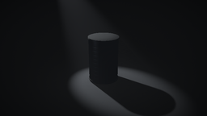
视觉工具实际返回图片 2
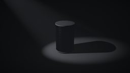
视觉工具实际返回图片 3
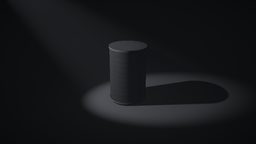
视觉工具实际返回图片 4
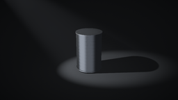
保存候选 4 份；完成命令 6 次；可验证图片返回 4 张。原始 API 响应与完整日志保留在本地。